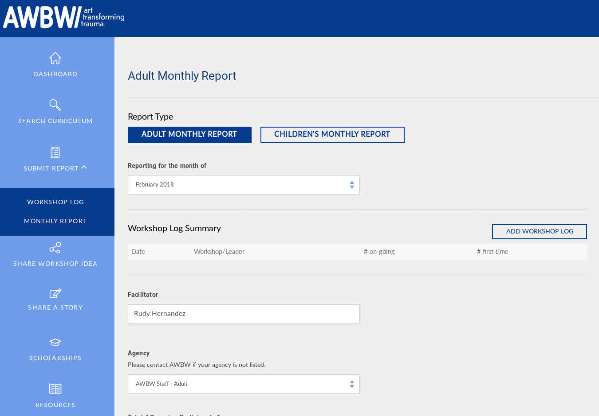

Portfolio
Gastón Ramos - Software Engineer.
The following are some projects which I was involved, most of them were built using ruby and web technologies.
Enara
Enara is building a network of clinics that offer insurance-covered obesity care. Enara’s platform has helped thousands of people achieve greater health outcomes by making it possible for any clinic to deliver best-in-class obesity care.What I've Done for Enara
- Billing System
- Several integrations with externals api Systems (drchrono)
- EHR System
- Functional and Model Tests
- Rails Core app migration from Aptible to AWS Ecs
- Deploy scripts for AWS Ecs
- Sidekiq and Redis jobs migration from Aptible to AWS Ecs & Elastic Cache
- Databse Migration from Aptible to AWS
- Architecture improvements
- Exception Handling imrpovements
- Integration with an external Calendar System
- Troubleshooting and fixing bugs
The web application and API were built using Rails 5, Docker, AWS and Html 5.
Avancargo
Avancargo facilitates the contracting of freight transport through a platform that intelligently combines supply and demand, simplifying transactions and processes.The web application and API were built using Rails 5, Jquery, Docker, AWS and Html 5 and Several Custom Gems.

AWBW Dashboard (Zehner Group)
A Window Between Worlds collaborates with human service agencies across the country, training and supporting the staff at these partner organizations in facilitating our healing arts curriculum. These workshops provide a unique “Window of Time” for participants — a safe, non-judgmental environment where they can authentically express themselves in new ways.The dashboard was made using technologies like Rails 4, Rails Admin, Jquery and Html 5.
TripViajes
TripViajes We built tripviajes from scratch, we worked hard to have a useful reservation system in 1 month, it can manage programmable services, customers and reservations. The system is very simple it has 11 Gems dependencies, ~400 LOC in ruby and ~120 LOC in Javascript.
- Technology: Cuba - Dep - Cutest - Postgresql - Git - html5 - Pure css.
Cloudfoundry Installer (Altoros)
Cloudfoundry is an open source, multi cloud application platform as a service. I built an installer using Vagrant and Chef recipies, until that moment it was very hard to install cloudfoundry in a developer machine. I went 2 months to San Francisco to work with the cloudfoundry team at the pivotal labs offices.
https://github.com/gramos/cf-vagrant-installer
https://dzone.com/articles/how-deploy-cloud-foundry-v2
CF Storm (Altoros)
Cf Storm is the open source web console for Cloudfoundry. It allows to connect to any Cloudfoundry API endpoint, for easy administration. At the moment only it alllows to manage spaces and apps but we are planning to add users, organizations and services. I built CF storm with Ruby, Cuba, Redis and Cutest.
Warner Music (Altoros)
I worked in Warner as DevOps Engineer implementing cloudfoundry and building some Bosh packages like: ElasticSearch, Gitlab, PostgreSql. Technologies: Cloudfoundry, Bosh, Chef, Ruby, Git.
https://github.com/cloudfoundry/omniauth-uaa-oauth2/commits?author=gramos
ZestFinance (Altoros)
ZestFinance is one of the fastest growing financial technology startups in the United States, it lends money (credits) to people using credit-score through computing to calculate the person solvency. I worked in this project as Software Engineer procesing payments using Ruby on Rails and Plain Ruby, we also used Chef for deploying. We made 2 gems:
achis ( Achis helps to integrate an application with different ACH processors )
https://github.com/eloyesp/achaas
Healthify (Altoros)
Healthify is a leading software provider to health plans, hospitals, and provider networks working in low-income communities. I worked as software engineer using technologies like Ruby on Rails, Elasticsearch, PosgreSql.
Skillvana (Altoros)
I biult the entire site from scratch, it tried to be something like coursera, it never went to production, it had courses, lessons, students, quizes, videos and a kind of forum too. we built an MVP with Cuba, Ohm, Redis, Cutest.
SmartTouch
I started working on SmrtTouch from the begining of the project, SmrtTouch is a tool that allow users drawing routing calls with a friendly UI and diagrams, is made using technologies like Rails 3, Backbone.js, Jquery and Html 5.


Simulscribe
PhoneTag automatically converts your voicemail into text and delivers it directly to your mobile phone and/or your email account; so you can read your voicemail. I worked doing the transcription's workflow process using technologies like Rails 2, Mongo Db, Amazon EC2 and Delayed Job.
Assembla.com
Assembla.com I worked in assembla improving the whole site and adding some new features, i did the multiple server deploy, added sftp protocol support and git repo support for the ftp tool.
Rmbrme.com
RmbrMe.com Is a web application for sharing contact information from your mobile phone, i worked as a contractor in order to add some new functionality and improve the existing code. I built the integration with Twitter, the new subscription system. I did the migration to rails 2.3 and cucumber. We launched beamME Pro 3.0.
IfansBlog & App Installer for Passenger
I have modified Big Blue Pass Fan Blog to be a new generic fan blog system, now it's possible to install ifansblog and setup any Sport Team.
I have developed a ruby script to install and deploy a new Ifansblog site, on Apache server using Passenger (Mod_Rails) and Ruby Enterprise Edition with a simple user interface, to install.
- Technology: Ruby on Rails 2.1.1 - Passenger - Ruby EE - Apache.
Big Blue Pass Fan Blog
Big Blue Pass (http://www.bigbluepass.com/) Is a Giant's Fan blog, users can post articles about the team and comments them, they can track Giant's NFL games and read news from a feed list. Users can publish your personal profile if they wish. There is a backend to manage users accounts and page content.


- Technology: Ruby on Rails 2.1.1 - BDD (Rspec).
- Used Plugins: restful_authentication, acts_as_state_machine, attachment_fu, easy-fckeditor, meteor_strike, permalink_fu, rspec, rspec-rails, timed_fragment_cache, will_paginate.
ChunkyCode
Chunky Code (http://code.mogok.com.ar) Is a social blogging system thats allows to users posting chunks of code, is made focusing on source code and makes easy the edition through Markdown technology. See Documentation (In Sapnish)
- Technology: Ruby on Rails 2.0.2 - REST - BDD (Rspec).
- Used Plugins: acts_as_ferret, acts_as_state_machine, restful_authentication, acts_as_taggable_on_steroids, geokit, ym4r_gm, gravatar, rspec, rspec_on_rails, will_paginate, railroad
- Google Maps Api.
Rdental

- Technology: Ruby on Rails - RMagic - ImageTooth - Rspec .
- Odontograms history.
- A simple interface for edit an update odontograms.
- Upload patiens pictures.
ImageTooth ruby library
ImageTooth ImageTooth is a library that provides programmers and users a simple way to generate images for odontograms. IT allows to choose between png or jpg images..
- Technology: Ruby - RMagic - Rspec - RubyGem.
- Tooth image generation.
- Simple script that allows you to create the teeth images directly.
- A simple interface for painting teeth faces.
- All permutations generating.
Terra sms alert backend
Terra sms alert backend is an SMS alert system, where they users have suscript via SMS and they receive alerts on their mobiles.
- Technology: PHP - SimpleTest - Oracle.
- Instants messages.
- Daily messages.
Bippie CMS backoffice
Bippie CMS backoffice is a web-based Content management system for mobile contents.
- Technology: Php - Perl - Mysql.
- Wallpapers - Polyphonic ringtones - Monophonic ringtones - Video - Mp3.
- Content download ranking.
- Partners management interface.
- Backend interface.